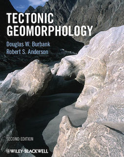
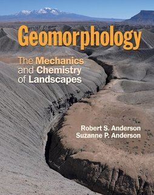

Tectonic geomorphology is the study of the interplay between tectonic and surface processes that shape the landscape in regions of active deformation and at time scales ranging from days to millions of years. Using Badlands, we will make a quantitative assessment of the impact of these tectonic forces on landscape and drainage evolution. We will also look at how climate, and in particular the spatial pattern of precipitation, is affecting the topographic and tectonic evolution of mountain belts through erosion.
Preamble
Unidirectional moisture flux and mountain-belt evolution (from Dietrich & Perron 2006)
Tectonic processes govern the dynamic nature of Earth’s crust and shape the global distribution of continents, ocean basins, and landforms. Setting the template on which climate and erosion interact, tectonics elevates rocks above sea level where weathering prepares the ground for wind, rain, and rivers to erode and sculpt landscapes.
It is no coincidence that many of our planet’s major surface features coincide with the boundaries of tectonic plates, where uplift, deformation, and erosion are focused. The imprint of tectonics on geomorphology is apparent not only in the size, extent, and location of mountain ranges, but in the localized steepness of river profiles, the character of mountain slopes, and in the form of river networks that flow along regional joint patterns or are offset across faults.
Synthetic landscape evolution simulated with TTLEM software
Lecture resources
The fluvial dissection of the landscape consists of valleys and their included channel ways organized into a system of connection known as a drainage network. Drainage networks display many types of quantitative regularity that are useful in analyzing both the fluvial systems and the terrains that they dissect (Howard, 1967). Drainage basins are the principal hydrologic unit considered in fluvial geomorphology. A drainage basin is the source for water and sediment that moves from higher elevation through the river system to lower elevations as they reshape the channel forms.
In the first part of the lecture we will look at the different components of a drainage basin. Then we will describe the dominant types of processes present on hillslopes where both gravity and running water are active. We will discuss the physical principles underlying mass movements and slope stability.
| HTML version (for Chrome or Safari) | PDF version |
In this module we will focus on the main equations developed in landscape evolution models (LEMs). These models are quantitative tools used to simulate Earth surface processes and the evolution of the land surface. LEMs can be used to deduce whether hypotheses about landscape evolution are likely to be valid, by making quantitative predictions about their development.
LithoCHILD Landscape Evolution Model from A. Forte
LEMs are ultimately driven by a set of mathematical equations - the geomorphic transport functions, often termed 'laws' (Tucker and Hancock, 2010). These laws may be derived from physical first principles, empirical evidence, or sometimes a combination of both. When implemented in a model, these laws are applied to a series of discretised cells or nodes representing the landscape.
A wide range of fluvial incision processes can be simulated with these models, including both detachment- and transport-limited erosion models, sediment transport, and a range of hydrological and rainfall-runoff generation routines. Recent development of modules has extended.
Recent development of modules has extended process representation to include, for example, modules of dynamic vegetation growth, floodplain evolution, dynamic adjustment of channel width, representation of sediment grain size, and debris flows.
The Modelling Geomorphic Systems: Landscape Evolution chapter from D. A. Valters 2016 presents an overview of the current approaches used in landscape evolution modelling.
| HTML version (for Chrome or Safari) | PDF version |
Continental-scale drainages host the world’s largest rivers and offshore sediment accumulations, many of which contain significant petroleum reserves. Rate of sediment supply in these settings may be a signal of external controls (e.g., tectonics, climate) on landscape evolution, yet deciphering between these controls remains a major challenge in interpreting the ancient stratigraphic record.
In this module we will explore drainage reorganization at catchment, regional and continental scales, we will discuss the role of tectonics and climates on catchment dynamics, drainage networks responses and subsequent landscape evolution.
Continental scale model of Australian landscape evolution
We will illustrate how the drainage migrates using EarthByte's LEM (Badlands).
| HTML version (for Chrome or Safari) | PDF version |
For the labs
We will use Jupyter, a web application that allows you to create and share documents that contain live code, equations, visualizations and explanatory text. To access the module materials we will download via Kitematic a Docker container. Please follow the documentation provided here on how to install the materials on your local computer or directly from the school computer labs.
This lab is an upscaled version of an experimental model from Bonnet & Crave 2003. simulate mountain range formation by upscaling the analogue experiment presented in previous section. The example illustrates long-term landscape evolution of an active mountain range. It shows how the constant valley spacing, achieved at steady state on both sides of the range, is progressively shifted due to a precipitation gradient applied across the mountain belt.
You will apply different climatic conditions and perform morphometrics and hydrometrics analysis using Badlands to quantitatively evaluate the catchment dynamics.
Using Badlands, you will simulate the main processes responsible for the formation of the Grand Canyon. You will be able to modify the erosive power of the water flow, the hillslope coefficients and the climate/tectonic forces to see how different the Grand Canyon might have looked as it developed through different types of bedrock.
You will analyse the development and propagation of knickpoints within the main valleys for different initial conditions of fault activity.
Flexure of the lithosphere is a frequently observed process by which loads bend the elastic outer shell of Earth. Using Badlands, you will simulate how variation in elastic thicknesses of the underlying plate is controlling basin formation and test the feedback mechanisms between surface processes, sedimentation and flexure with a set of simple models.
It will give you some insights on large-scale geometry of the sedimentary infill as related to orogen tectonics evolution of foreland basins.
Going further
Below is a list of two books available from the University library on the subject:
| book 1 | Tectonic Geomorphology: D. W. Burbank, R. S. Anderson |
|  book 2 | Geomorphology: The Mechanics and Chemistry of Landscapes, R. S. Anderson, S. P. Anderson |